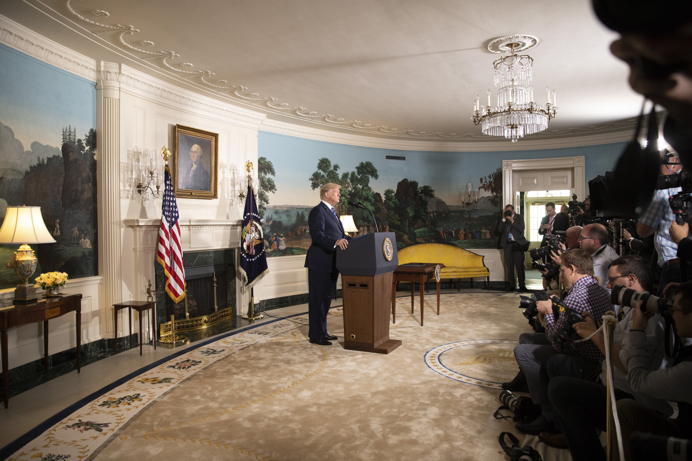

L’extraterritorialité du droit : la norme comme instrument de puissance
Droit extraterritorial, sanctions et rapports de force géoéconomiques

Introduction
Longtemps envisagé comme un cadre destiné à organiser et sécuriser les relations économiques, le droit est progressivement devenu un instrument du rapport de puissance entre États. Deux ouvrages ont particulièrement contribué à ma compréhension de cette dimension des relations internationales : Le Piège américain de Frédéric Pierucci (2019) et Le droit, nouvelle arme de guerre économique d’Ali Laïdi (2019). À partir de perspectives différentes, ils mettent en lumière la capacité des États-Unis à mobiliser leur droit au-delà de leurs frontières et les conséquences de cette extraterritorialité pour les entreprises et les États étrangers.
L’affaire Alstom, au cœur du récit de Frédéric Pierucci, en constitue l’un des exemples français les plus emblématiques. Lutte contre la corruption, sanctions économiques, contrôle des exportations ou restrictions d’accès à certaines technologies : la puissance américaine permet à des décisions prises à Washington de produire des effets sur des transactions et des entreprises situées bien au-delà du territoire des États-Unis. Les entreprises européennes en ont notamment fait l’expérience face aux sanctions américaines contre l’Iran, parfois contraintes de choisir entre la poursuite de leurs activités sur un marché tiers et la préservation de leur accès au marché et au système financier américains.
Cette situation pose une question plus fondamentale sur la nature de la puissance économique contemporaine. L’Union européenne dispose elle-même d’une importante capacité normative et utilise désormais largement sanctions, réglementation et instruments commerciaux dans ses relations extérieures. La Chine développe également ses propres dispositifs de protection et de riposte face aux mesures étrangères. Pourtant, édicter une norme ne suffit pas à l’imposer. Derrière l’extraterritorialité du droit se trouve donc une réalité plus classique des relations internationales : la capacité d’un État à transformer sa norme en contrainte dépend des leviers économiques, financiers, technologiques et politiques dont il dispose pour en faire supporter le coût à ceux qui voudraient s’y soustraire.
I. Les États-Unis et la projection extraterritoriale du droit
L’extraterritorialité du droit désigne la capacité d’un État à appliquer certaines de ses normes à des personnes, des entreprises ou des opérations situées au-delà de son territoire. Les États-Unis n’en ont pas le monopole, mais ils disposent d’une capacité particulièrement importante à donner à leurs législations des effets internationaux. Celle-ci repose à la fois sur l’étendue de certaines bases de compétence prévues par le droit américain et sur la place centrale qu’occupent les États-Unis dans l’économie mondiale : marché, système financier, dollar, technologies ou encore implantation américaine des grandes entreprises internationales.1
Le Foreign Corrupt Practices Act (FCPA), adopté en 1977, en constitue l’une des illustrations les plus connues. Cette législation réprime notamment la corruption d’agents publics étrangers et comporte également des obligations comptables pour certaines entreprises. Son champ ne se limite pas aux seules sociétés américaines : selon les situations, des émetteurs étrangers cotés aux États-Unis, certaines personnes ou entreprises étrangères ainsi que des actes présentant un rattachement suffisant avec le territoire américain peuvent relever de ses dispositions. Le guide conjoint du Department of Justice (DOJ) et de la Securities and Exchange Commission (SEC) consacre ainsi explicitement une partie à la portée juridictionnelle du FCPA.2
Cette politique d’application a toutefois été réorientée en 2025. Après avoir ordonné en février une suspension temporaire des nouvelles enquêtes, l’administration Trump a publié, le 9 juin 2025, de nouvelles directives demandant au DOJ de concentrer ses poursuites sur les affaires affectant directement les intérêts américains. Figurent notamment parmi les priorités les liens avec les organisations criminelles transnationales, les atteintes à la compétitivité des entreprises américaines, les secteurs stratégiques et les faits de corruption les plus graves. Le texte du FCPA et son champ juridictionnel n’ont pas été modifiés : il s’agit d’une évolution de la politique d’engagement des poursuites, tandis que la SEC conserve ses propres compétences. Cette inflexion confirme néanmoins la dimension géoéconomique du dispositif, puisque l’application du droit anticorruption est désormais plus explicitement articulée à la sécurité nationale et à la défense des intérêts économiques américains.3
L’affaire Alstom en constitue pour la France un exemple emblématique. En décembre 2014, le groupe français a plaidé coupable aux États-Unis et accepté une amende pénale de 772,29 millions de dollars dans une affaire de corruption concernant plusieurs pays, dont l’Indonésie, l’Arabie saoudite, l’Égypte et les Bahamas. Le DOJ reprochait notamment à Alstom d’avoir falsifié ses livres et comptes et de ne pas avoir mis en place des contrôles internes suffisants conformément au FCPA. Une filiale suisse d’Alstom a également plaidé coupable de conspiration visant à enfreindre les dispositions anticorruption du FCPA, tandis que deux filiales américaines ont conclu des deferred prosecution agreements avec les autorités américaines.4
L’affaire a acquis en France une dimension politique particulière en raison de l’arrestation aux États-Unis, en 2013, de Frédéric Pierucci, alors cadre d’Alstom, puis du projet de cession, annoncé en 2014, des activités énergétiques du groupe à General Electric — l’opération ayant été finalisée en novembre 2015.5 Dans Le Piège américain, Pierucci interprète l’enchaînement de ces événements comme l’illustration d’une utilisation du droit américain au service d’un rapport de force économique.6 Le dossier du DOJ documente pour sa part un système de corruption internationale et les infractions reconnues par Alstom. L’intérêt géoéconomique de l’affaire réside précisément dans cette superposition entre une procédure judiciaire fondée sur des infractions réelles et ses conséquences considérables pour un groupe industriel stratégique étranger.
Le cas de BNP Paribas, la même année, relève d’un autre mécanisme et illustre encore plus directement le poids du système financier américain. La banque française a plaidé coupable d’avoir traité, entre 2004 et 2012, des milliards de dollars de transactions au bénéfice d’entités soudanaises, iraniennes et cubaines soumises à des sanctions américaines. Le rattachement aux États-Unis tenait notamment au passage de ces opérations en dollars par le système financier américain. BNP Paribas a reconnu avoir fait transiter plus de 8,8 milliards de dollars au bénéfice d’entités sanctionnées et s’est vu imposer au total près de 9 milliards de dollars de pénalités financières.7
Alstom et BNP Paribas ne constituent pas des cas isolés. En 2008, l’allemand Siemens et plusieurs de ses filiales ont conclu avec les autorités américaines des procédures liées au FCPA : les sanctions américaines ont représenté environ 800 millions de dollars — 450 millions d’amendes pénales imposées par le DOJ et 350 millions versés dans le cadre de la procédure de la SEC. Le règlement coordonné avec les autorités allemandes a porté le total des sanctions à environ 1,6 milliard de dollars.8 En 2020, Airbus a pour sa part conclu un règlement coordonné avec les autorités françaises, britanniques et américaines pour plus de 3,9 milliards de dollars, concernant des faits de corruption ainsi que, aux États-Unis, des infractions liées à la réglementation sur les exportations de matériels de défense.9 Ces affaires montrent également le rôle central pris par les accords négociés, reconnaissances de culpabilité et deferred prosecution agreements dans le traitement des grandes affaires internationales par les autorités américaines.10
La force de cette projection juridique ne réside pas seulement dans les textes. Une transaction passant par le système financier américain, une présence ou une filiale aux États-Unis, une cotation sur un marché américain ou certains actes commis sur le territoire peuvent, selon la législation concernée, exposer une entreprise étrangère à la juridiction américaine. Cependant, l’utilisation du dollar ou d’un composant américain ne suffit pas, dans toutes les circonstances et pour toutes les législations, à soumettre automatiquement une opération à l’ensemble du droit américain. Les critères de rattachement diffèrent selon que l’on parle du FCPA, de sanctions financières ou encore de contrôle des exportations.11
C’est précisément cette combinaison entre droit et puissance économique qui donne au dispositif américain sa portée. Les États-Unis ne projettent pas uniquement leurs règles au-delà de leurs frontières : ils disposent des moyens économiques, financiers, administratifs et surtout judiciaires nécessaires pour rendre le risque de non-conformité suffisamment élevé pour modifier le comportement d’acteurs étrangers. L’extraterritorialité devient ainsi un instrument de puissance lorsque le coût de se soustraire à la norme américaine dépasse celui de s’y conformer.
II. L’extraterritorialité américaine à l’épreuve du cas iranien
La portée internationale du droit américain ne concerne pas uniquement les entreprises poursuivies pour des faits de corruption ou des infractions commises aux États-Unis. Elle permet également à Washington d’exercer une pression sur des acteurs étrangers afin qu’ils respectent certaines orientations de sa politique extérieure. Les sanctions dites secondaires en constituent l’un des principaux instruments : elles ne visent pas seulement les ressortissants américains, mais peuvent pénaliser une entreprise étrangère qui réalise avec un pays sanctionné une opération pourtant licite au regard de son propre droit.
Le retrait américain de l’accord sur le nucléaire iranien en fournit une illustration particulièrement nette. Conclu en 2015 entre l’Iran, les cinq membres permanents du Conseil de sécurité, l’Allemagne et l’Union européenne, le Joint Comprehensive Plan of Action (JCPOA) avait permis la levée d’une partie des sanctions internationales en contrepartie d’un encadrement du programme nucléaire iranien. Le 8 mai 2018, l’administration Trump annonça unilatéralement le retrait des États-Unis de l’accord et le rétablissement progressif des sanctions américaines. L’Union européenne, qui souhaitait préserver le JCPOA, déclara « profondément regretter » cette décision et rappela que l’accord avait été entériné à l’unanimité par la résolution 2231 du Conseil de sécurité des Nations unies.12
Ce désaccord politique n’empêcha cependant pas les sanctions américaines de produire des effets immédiats sur les entreprises européennes. Leur choix théorique était simple, mais profondément asymétrique : poursuivre leurs activités en Iran au risque de perdre leur accès au marché américain, au financement en dollars et aux services des banques internationales, ou renoncer au marché iranien. La puissance du dispositif ne tenait donc pas uniquement à l’interdiction juridique prononcée par Washington, mais à la disproportion entre les intérêts économiques en jeu.
Le groupe Total avait ainsi signé en juillet 2017 un contrat portant sur le développement de la phase 11 du gigantesque gisement gazier iranien de South Pars. Après l’annonce américaine, l’entreprise indiqua qu’elle ne pourrait poursuivre le projet sans une dérogation des autorités américaines et qu’elle devrait mettre fin à ses opérations avant le 4 novembre 2018. Total précisait alors être dans l’impossibilité de s’exposer à la perte de ses financements américains, alors que les banques des États-Unis participaient à une part importante de ses opérations financières et que plus de 30 % de son actionnariat était américain.13 Faute d’exemption, le groupe se retira du projet.
Les constructeurs automobiles français furent confrontés au même rapport de force. Dès juin 2018, PSA annonça la suspension de ses coentreprises iraniennes afin de se conformer au droit américain avant le rétablissement des sanctions du 6 août. Le groupe sollicita parallèlement, avec le soutien du gouvernement français, une dérogation auprès des autorités américaines.14 Ses comptes pour 2018 font apparaître 168 millions d’euros de dépréciations d’actifs liés à la suspension de ses activités en Iran, auxquels s’ajoutaient 17 millions pour Faurecia.15
Renault tenta initialement d’afficher une position plus résistante. En juin 2018, Carlos Ghosn déclarait que le groupe n’abandonnerait pas l’Iran, même s’il devait y réduire très fortement ses activités, afin de conserver un avantage lorsque le marché rouvrirait. Dans les faits, Renault cessa pourtant ses ventes dans le pays à partir d’août 2018 en raison de l’application des sanctions américaines.16 L’écart entre la volonté initialement exprimée et la décision finalement prise illustre la difficulté, pour une entreprise mondialisée, de résister durablement à une mesure américaine lorsqu’elle dépend par ailleurs de marchés, de technologies ou de circuits financiers liés aux États-Unis.
L’Union européenne tenta de protéger ses entreprises en réactivant son règlement de blocage, adopté à l’origine en 1996. Actualisé en août 2018, celui-ci interdit en principe aux opérateurs européens de se conformer à certaines législations extraterritoriales étrangères, sauf autorisation de la Commission. Il permet également aux entreprises concernées de demander réparation des dommages résultant de leur application et neutralise dans l’Union les décisions judiciaires étrangères qui leur donnent effet.17
Le mécanisme plaça toutefois les entreprises européennes face à une contradiction difficilement soutenable. D’un côté, le droit de l’Union leur interdisait théoriquement de se conformer aux sanctions américaines visées par le règlement ; de l’autre, la poursuite de leurs activités en Iran pouvait leur fermer l’accès à des marchés et financements autrement plus importants. L’Union européenne pouvait affirmer la légitimité de ses règles, mais elle ne disposait pas des mêmes leviers économiques et financiers pour en garantir l’application. Les décisions de Total, PSA et Renault montrent ainsi que l’autonomie juridique ne produit pas nécessairement une autonomie économique.
L’épisode iranien révèle donc une dimension centrale de l’extraterritorialité : la puissance d’une norme dépend moins de son seul champ formel que de la capacité de l’État qui l’édicte à imposer un coût aux acteurs qui refusent de s’y soumettre. Les États européens pouvaient contester politiquement le retrait américain et maintenir leur soutien au JCPOA ; leurs entreprises demeuraient néanmoins exposées aux décisions de Washington. Cette vulnérabilité conduit dès lors à s’interroger sur la situation de l’Union européenne elle-même : sa capacité reconnue à produire des normes lui permet-elle également de les transformer en instruments de puissance ?
III. L’Union européenne : puissance normative, puissance coercitive ?
L’Union européenne est souvent présentée comme une puissance normative : moins capable que les États-Unis de mobiliser des instruments militaires ou financiers, elle exercerait principalement son influence par la production de règles et de standards. Cette capacité repose sur la taille du marché intérieur européen. Pour y accéder, les entreprises étrangères doivent respecter les normes de l’Union, y compris lorsqu’elles ont leur siège et réalisent l’essentiel de leurs activités hors d’Europe. Face au coût que représenterait la création de produits ou de procédures entièrement distincts, certaines entreprises choisissent d’appliquer ces exigences à l’échelle mondiale. La juriste Anu Bradford a qualifié ce phénomène de « Brussels Effect ».18
Le Règlement général sur la protection des données (RGPD) en constitue l’exemple le plus visible. Entré en application en 2018, il ne concerne pas seulement les organisations établies dans l’Union. Son article 3 prévoit également son application à certaines entreprises étrangères lorsqu’elles proposent des biens ou des services à des personnes situées dans l’Union ou suivent leur comportement. Les sanctions peuvent atteindre 20 millions d’euros ou, pour une entreprise, 4 % de son chiffre d’affaires annuel mondial, le montant le plus élevé étant retenu.19 Le RGPD associe ainsi une portée territoriale étendue à un levier financier suffisamment important pour modifier les pratiques de groupes internationaux.
Cette influence dépasse la protection des données. Le règlement REACH, entré en vigueur en 2007, impose aux producteurs et importateurs de substances chimiques de fournir des informations sur leurs propriétés et leurs risques pour pouvoir accéder au marché européen. Même lorsque les obligations juridiques pèsent formellement sur l’importateur établi dans l’Union, elles se répercutent sur les chaînes d’approvisionnement mondiales : les producteurs étrangers doivent adapter leurs procédés, documenter leurs produits ou renoncer au marché européen.20 Des mécanismes comparables apparaissent aujourd’hui dans les domaines du numérique, de l’intelligence artificielle, des batteries, du climat ou encore de la lutte contre la déforestation.
Le droit européen de la concurrence constitue une autre manifestation de cette capacité coercitive. La Commission peut enquêter sur des entreprises étrangères dès lors que leurs pratiques affectent le marché intérieur et leur imposer des sanctions calculées en fonction de leur chiffre d’affaires mondial. En 2018, elle a ainsi infligé à Google une amende de 4,34 milliards d’euros pour abus de position dominante lié au système Android.21 Le Tribunal de l’Union européenne a largement confirmé la décision en 2022, tout en ramenant l’amende à 4,125 milliards d’euros.22 L’entreprise sanctionnée était américaine, mais l’existence d’effets sur le marché européen suffisait à justifier l’intervention des autorités de l’Union.
Cette logique a été prolongée par le Digital Markets Act (DMA) et le Digital Services Act (DSA). Le premier impose des obligations particulières aux grandes plateformes structurantes désignées comme gatekeepers et prévoit des amendes pouvant atteindre 10 % de leur chiffre d’affaires mondial, voire 20 % en cas de récidive. Le second impose aux plateformes numériques des obligations relatives notamment à la transparence, à la modération des contenus et à l’évaluation des risques systémiques.23 L’Union cherche ainsi à ne plus intervenir uniquement après la constatation d’une infraction, mais à définir en amont les conditions de fonctionnement du marché numérique.
Il existe donc bien une forme européenne d’extraterritorialité. Celle-ci diffère toutefois de l’approche américaine. L’Union ne prétend généralement pas appliquer indistinctement son droit à toute activité réalisée dans le monde : elle établit un rattachement avec son territoire, ses consommateurs ou les effets produits sur son marché. Sa puissance normative réside avant tout dans sa capacité à imposer des conditions d’accès à un espace économique de près de 450 millions de consommateurs.
Cette puissance rencontre néanmoins plusieurs limites. La première tient à la lenteur et à la fragmentation de l’exécution : les règles européennes sont adoptées collectivement, mais leur contrôle peut dépendre de la Commission, d’autorités nationales ou de juridictions différentes. La deuxième concerne la dépendance technologique de l’Europe. Réguler les principales plateformes numériques ne signifie pas disposer d’entreprises européennes capables de les concurrencer. L’Union peut donc encadrer des technologies conçues ailleurs sans nécessairement maîtriser les infrastructures, les données ou les chaînes de valeur dont elles dépendent.
L’épisode iranien a surtout révélé une limite plus profonde. L’Union est particulièrement puissante lorsqu’elle peut conditionner l’accès à son propre marché, comme dans les domaines de la concurrence, des données personnelles ou des produits chimiques. Elle l’est beaucoup moins lorsqu’elle cherche à protéger ses entreprises contre la puissance juridique d’un État tiers. Le règlement de blocage européen n’a pas suffi à maintenir Total, PSA ou Renault en Iran, car il ne pouvait compenser le risque de perdre l’accès au marché et au système financier américains.
L’Union européenne dispose donc d’une vraie puissance normative, accompagnée dans certains domaines d’une capacité coercitive considérable. Mais cette puissance demeure sectorielle et principalement adossée au marché intérieur. Elle permet à l’UE d’imposer ses règles à ceux qui veulent commercer avec elle, sans lui garantir une capacité équivalente à résister aux normes imposées par d’autres. La distinction entre puissance normative et souveraineté économique est donc essentielle.
IV. Les sanctions, instruments d’un affrontement juridique mondial
Les sanctions économiques constituent probablement la forme la plus directe de transformation du droit en instrument de puissance. Gel des avoirs, interdictions commerciales, restrictions financières, contrôles des exportations ou limitations d’accès à certaines technologies permettent à un État d’exercer une pression sans recourir directement à la force militaire. Leur efficacité dépend toutefois moins de leur seule légalité que du poids économique des États qui les adoptent, de leur capacité à les faire appliquer et du degré de dépendance de leur cible.
Certaines sanctions sont décidées collectivement par le Conseil de sécurité des Nations unies. D’autres sont adoptées de manière autonome par un État ou un groupe d’États. C’est notamment le cas des mesures américaines contre l’Iran, mais également d’une part importante des sanctions européennes. La frontière entre politique extérieure et ordre juridique devient alors particulièrement ténue : une orientation diplomatique est transformée en obligations imposées aux banques, aux industriels, aux transporteurs et à l’ensemble des acteurs participant aux échanges internationaux.
La réaction occidentale à l’invasion de l’Ukraine par la Russie en février 2022 a démontré que l’Union européenne pouvait, lorsqu’elle agissait avec ses partenaires, mobiliser une puissance coercitive bien supérieure à celle illustrée par le règlement de blocage. L’Union a progressivement adopté des restrictions visant les secteurs financier, énergétique, industriel, technologique et commercial russes. Elle a notamment interdit certaines opérations avec la Banque centrale de Russie, exclu plusieurs banques russes du système SWIFT, restreint l’exportation de technologies sensibles et gelé les avoirs de nombreuses personnes et entités.24
Ces mesures ont également produit des effets hors du territoire européen. Une entreprise asiatique, moyen-orientale ou africaine peut être conduite à examiner les règles européennes dès lors qu’elle utilise des composants européens, traite avec une entité sanctionnée, possède une filiale dans l’Union ou dépend de banques susceptibles de refuser l’opération. Les États-Unis ont parallèlement développé le recours aux sanctions secondaires contre les acteurs contribuant au contournement des restrictions. La coordination entre Washington, Bruxelles et les autres membres du G7 a donc considérablement accru le coût de l’accès russe aux capitaux, aux technologies et aux marchés occidentaux.25
Cet exemple montre néanmoins que les sanctions ne produisent jamais un isolement absolu. La Russie a réorienté une partie de ses échanges vers la Chine, l’Inde, la Turquie ou les Émirats arabes unis et développé des circuits alternatifs d’approvisionnement. Les restrictions occidentales ont renchéri et complexifié ces échanges sans les faire entièrement disparaître. Leur efficacité dépend donc de la coalition qui les applique, de la disponibilité de partenaires ou de technologies de substitution et de la capacité des entreprises à réorganiser leurs chaînes de valeur.
Face à la multiplication de ces instruments, les autres puissances développent leurs propres dispositifs de protection et de riposte. La Chine a ainsi adopté en juin 2021 une loi contre les sanctions étrangères. Celle-ci permet aux autorités chinoises de prendre des contre-mesures contre les personnes ou organisations participant à l’élaboration ou à l’application de mesures jugées discriminatoires à l’égard d’acteurs chinois. Ces contre-mesures peuvent notamment comprendre un refus d’entrée sur le territoire, le gel d’avoirs situés en Chine ou l’interdiction de transactions avec des organisations chinoises.26
Ce dispositif place potentiellement les entreprises internationales dans une situation comparable à celle créée par l’opposition entre les sanctions américaines contre l’Iran et le règlement de blocage européen. Une entreprise appliquant une mesure américaine peut s’exposer à une réaction chinoise ; mais refuser de l’appliquer peut compromettre son accès aux États-Unis. Les directions juridiques et les services de conformité ne sont plus seulement chargés de respecter un ensemble de règles : ils doivent arbitrer entre plusieurs systèmes normatifs dont les prescriptions peuvent devenir contradictoires.
L’Union européenne cherche elle aussi à renforcer ses moyens de riposte. Entré en vigueur en décembre 2023, l’instrument européen anticoercition permet à l’Union de répondre lorsqu’un pays tiers utilise des mesures commerciales ou économiques pour tenter d’influencer ses décisions ou celles d’un État membre. Après une phase de dialogue, l’Union peut adopter différentes contre-mesures portant notamment sur les droits de douane, les importations, les marchés publics, les services ou les investissements.27 Ce mécanisme ne vise pas spécifiquement l’extraterritorialité américaine : il traduit plus largement la volonté de doter l’Europe d’un outil de dissuasion face à la coercition économique.
La multiplication de ces textes révèle une évolution du système international. Les grandes puissances ne cherchent plus seulement à protéger leur territoire ou leurs entreprises ; elles utilisent leur droit pour structurer les comportements des acteurs étrangers, sécuriser leurs intérêts stratégiques et limiter les marges de manœuvre de leurs adversaires. Simultanément, elles adoptent des lois de blocage ou de contre-sanctions pour neutraliser les normes imposées par les autres.
Cette confrontation comporte un risque de fragmentation de l’économie mondiale. Les entreprises peuvent être contraintes de séparer leurs technologies, leurs circuits financiers, leurs systèmes de données ou leurs chaînes d’approvisionnement afin de respecter des exigences incompatibles. La conformité juridique devient ainsi un élément de la compétition géoéconomique, tandis que l’accès aux marchés, aux devises, aux ressources et aux technologies constitue la véritable force placée derrière la règle.
Le droit n’est donc pas, par nature, une arme réservée à une seule puissance. Les États-Unis ont été les premiers à l’utiliser à une telle échelle en s’appuyant sur le dollar, leur marché et leur système financier. L’Union européenne transforme progressivement son marché intérieur en levier d’influence et cherche à se protéger contre la coercition extérieure. La Chine construit à son tour un appareil juridique de contre-sanctions et de contrôle des dépendances.
Conclusion
L’extraterritorialité du droit ne constitue ni une singularité exclusivement américaine ni un mécanisme purement juridique. Elle devient un instrument de puissance lorsqu’un État dispose des moyens économiques, financiers, technologiques et administratifs nécessaires pour imposer ses règles au-delà de son territoire. Les États-Unis bénéficient à cet égard d’avantages considérables : centralité du dollar, profondeur de leur marché, poids de leur système financier et domination dans plusieurs technologies stratégiques.
L’Union européenne exerce elle aussi une influence internationale grâce à la taille de son marché et à sa capacité réglementaire. Cette puissance demeure cependant principalement défensive et sectorielle. La Chine développe de son côté ses propres dispositifs de contrôle et de contre-sanctions. Le droit devient ainsi l’un des terrains sur lesquels s’exprime la recomposition des rapports de force internationaux.
Quatre implications stratégiques
1. La maîtrise des dépendances conditionne la souveraineté juridique
Un État ne peut réellement imposer ou défendre ses normes vis-à-vis de l’extérieur que s’il maîtrise les infrastructures qui permettent leur application. Monnaies de règlement, systèmes de paiement, technologies critiques, plateformes numériques, données, ressources et chaînes logistiques constituent autant de leviers potentiels. La souveraineté juridique ne peut donc être dissociée de la souveraineté économique, financière et technologique.
2. La conformité devient une fonction stratégique de l’entreprise
Le respect des normes étrangères ne relève plus seulement du service juridique. Une sanction, une modification réglementaire ou un conflit entre deux systèmes de droit peut remettre en cause un marché, un financement ou une chaîne d’approvisionnement entière. Les entreprises doivent intégrer ces risques à leur veille, à leurs décisions d’investissement et au choix de leurs partenaires. La conformité rejoint ainsi pleinement le champ de l’intelligence économique.
3. Les entreprises doivent anticiper les conflits de normes
La multiplication des sanctions, lois de blocage et mécanismes de contre-sanctions expose les groupes internationaux à des obligations contradictoires. Respecter une règle américaine peut entraîner une sanction chinoise ou contrevenir au droit européen ; poursuivre une activité autorisée par l’Union peut compromettre l’accès au système financier américain. La cartographie des dépendances et la construction de scénarios géopolitiques deviennent indispensables avant toute implantation ou opération sensible.
4. L’UE, puissance normative qui manque de capacité d’action
La production de règles ambitieuses constitue un atout, mais elle ne suffit pas à garantir l’autonomie stratégique. Pour résister durablement aux mesures extraterritoriales, l’Union doit pouvoir réduire certaines dépendances, proposer des infrastructures financières et technologiques crédibles et protéger effectivement les entreprises qui respectent ses orientations. L’enjeu n’est pas de reproduire systématiquement les pratiques américaines, mais d’éviter que les choix politiques européens puissent être neutralisés par les décisions juridiques d’une puissance tierce.
En définitive, le droit ne devient une arme de puissance que lorsqu’il est soutenu par la capacité matérielle d’en imposer les conséquences. Comprendre l’extraterritorialité suppose donc de dépasser l’analyse des textes pour observer les dépendances qui leur donnent leur force. Dans la compétition géoéconomique contemporaine, celui qui maîtrise les infrastructures de l’échange possède aussi une part croissante du pouvoir d’en fixer les règles.